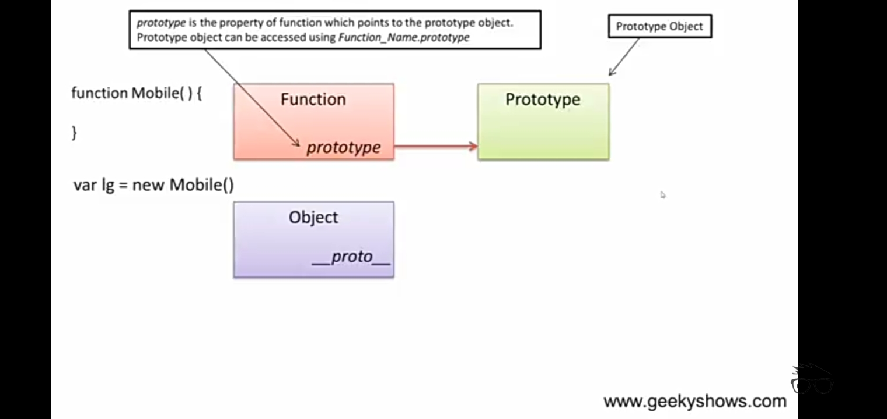

How does prototype work in javascrpt
when we create a function in javascrpt behind the sences a function object and a objects are created:-
1. Function object which has a property called protorype
2. Object.Prototype is created from function
function Mobile(){} -> Mobile Function and Moile.Prototype are the objects of function
when we create a object using this function we get:-
1. Object which has an property named __proto__
This object is associated to Prototype and __proto__ links to protorype
We can access Prototype by Mobile.prototype and __proto__ form Mobile function and Object created by Mobile function

So if we declar a variable in mobile i.e.
function Mobile(){
this.a = 10;
}
var New_object = new Mobile();
then the javascrpt engine will find the variable form Object created by the New_object to Prototype and it will find it in Object so no need to go to Prototype
What if i.e. Mobile.prototype.a = 10;
create a prototype protperty and in function a is not declared then engine will start finding the value form Object to Null and it find it in Prototype
Then it shows that wheneven a property is declared javascrpt engine will find it form bottom to top and it finds until it gets the property
function Constructor(){
this.a = 10;
}
var new_Object = new Constructor();
console.log(Constructor); // full function
console.log(new_Object); // defines the constructo and value
console.log(Constructor.prototype); // defines prototype of Constructor
console.log(new_Object.__proto__); // defines prototype of new_Object
//both links to the same i.e. Prototype
console.log(Constructor.prototype === new_Object.__proto__); //true
console.log(Constructor === new_Object.__proto__.constructor); //true
console.log(Constructor === Constructor.prototype.constructor); //true